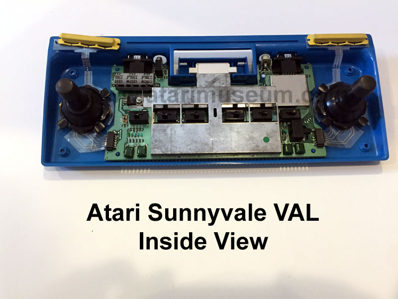
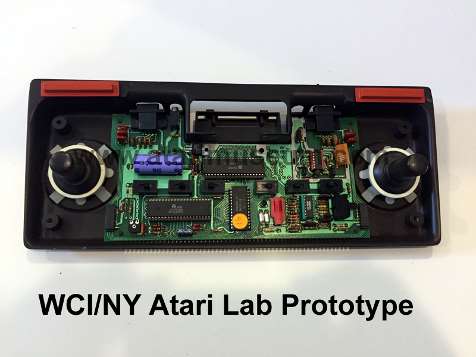
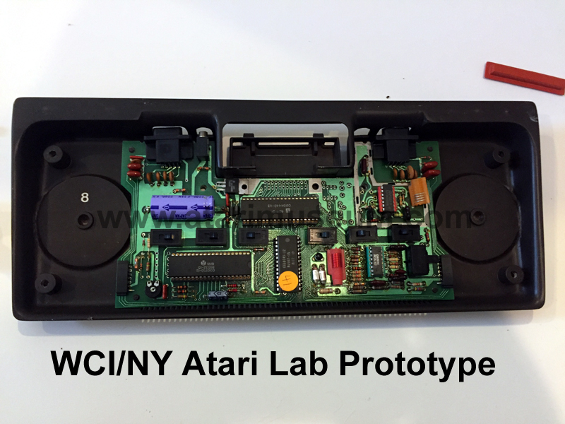
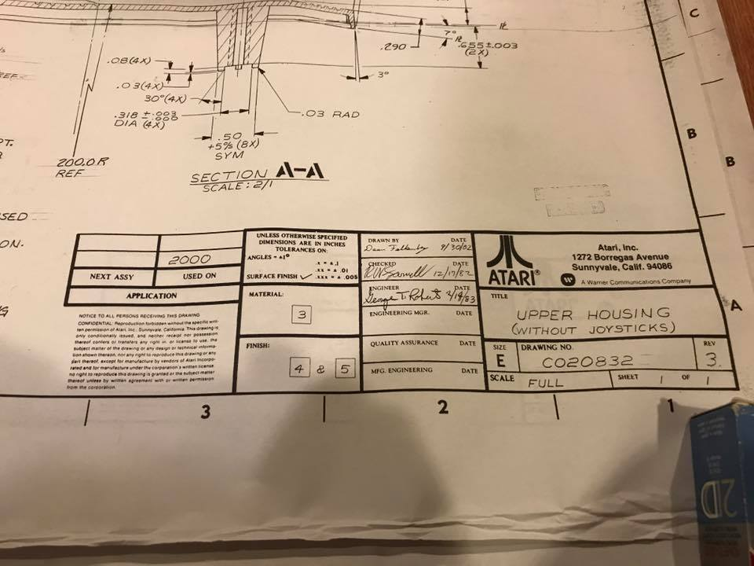
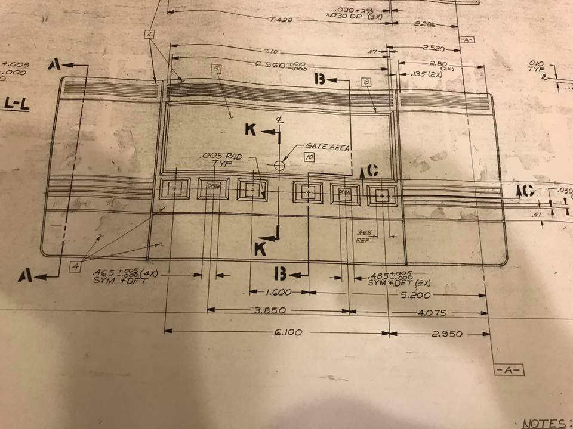

The motherboard itself only occupies two thirds of the case, the remaining
area is taken up by the built in joysticks which rest atop mylar touch-sensitive
plastic. Below is an inside view of the Sunnyvale Val:

The earlier Brown WCI/NY Val
shown here is actually the very first prototype hand sample.
So early the case was hand cast and the internal motherboard
doesn't even have a cartridge connector on it and the mylar
joystick circuit boards aren't even done in it yet.


"VAL" project was eventually halted, however
the original idea of a newer low cost 2600 did continue and was brought
to final product as the Atari 2600jr.
Actually when the 2600jr project was being developed by Atari, Inc under
Warner Communications, the project nicknamed "Bonnie" and at one
point "Janis" was designated the Atari 2100. For
those who have been curious enough to open a 2600jr, you will note that
the system board is (c) 1983. The 2600jr was designed by Atari,
Inc under Warner Communications, the 2600jr. was actually competition to
the CX-2000, engineers in Sunnyvale Atari labs didn't like the CX-2000
and the 2600jr. was their response to it. The 2600jr. has the
name "ACTION" on it, that may have been its nickname under the Tramiel
owned Atari.
Another side note: Certain Atari Engineering Logbooks show
that the Atari 7800, once completed, would then be introduced as a newer
"Low Cost 7800" and they were considering the use of the Atari 2100 case
(later known as the 2600jr case). This version of Atari 7800
was never designed.
UPDATE: Oct 7, 2017 - While reviewing
documents in the Atari Museum archives, a second storage
tube of Atari 2000 drawings were found. These
drawings appear to show that Sunnyvale Atari was also
working on a version of the CX-2000 without joysticks:

